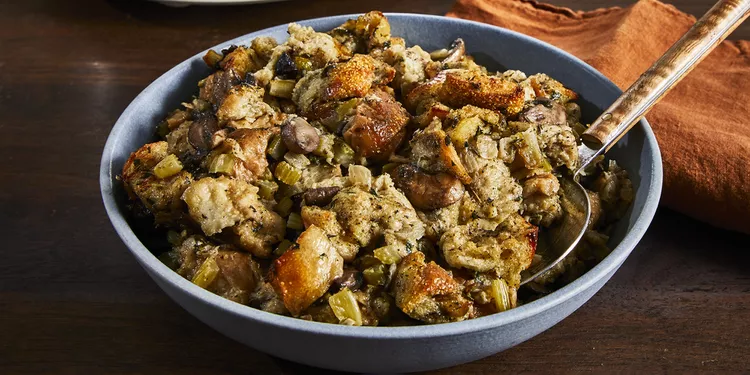

Slow Cooker Stuffing
Home

This crockpot stuffing is an easy way to make extra stuffing for a large crowd — and it frees up stove space because it cooks in a slow cooker.
Ingredients
- 1 cup butter
- 2 cups chopped onion
- 2 cups chopped celery
- 12 ounces sliced mushrooms
- ¼ cup chopped fresh parsley
- 12 cups dry bread cubes
- 1 ½ teaspoons salt
- 1 ½ teaspoons dried sage
- 1 teaspoon poultry seasoning
- 1 teaspoon dried thyme
- ½ teaspoon dried marjoram
- ½ teaspoon ground black pepper
- 4 ½ cups chicken broth, or as needed
- 2 large eggs, beaten
Directions
Step 1
Melt butter in a skillet over medium heat. Cook and stir onion, celery, mushroom, and parsley in butter until slightly softened, 5 to 8 minutes.
Step 2
Place bread cubes in a very large mixing bowl. Spoon cooked vegetables over bread cubes. Season with salt, sage, poultry seasoning, thyme, marjoram, and pepper. Pour in enough broth to moisten, then mix in eggs. Transfer mixture to a slow cooker.
Step 3
Cover and cook on High for 45 minutes, then reduce heat to Low and cook for 4 to 8 hours.